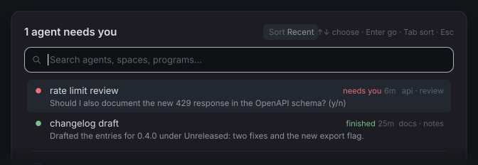
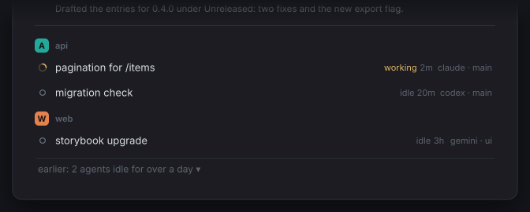
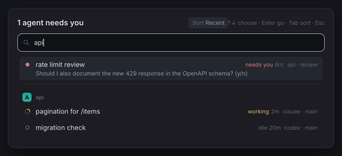
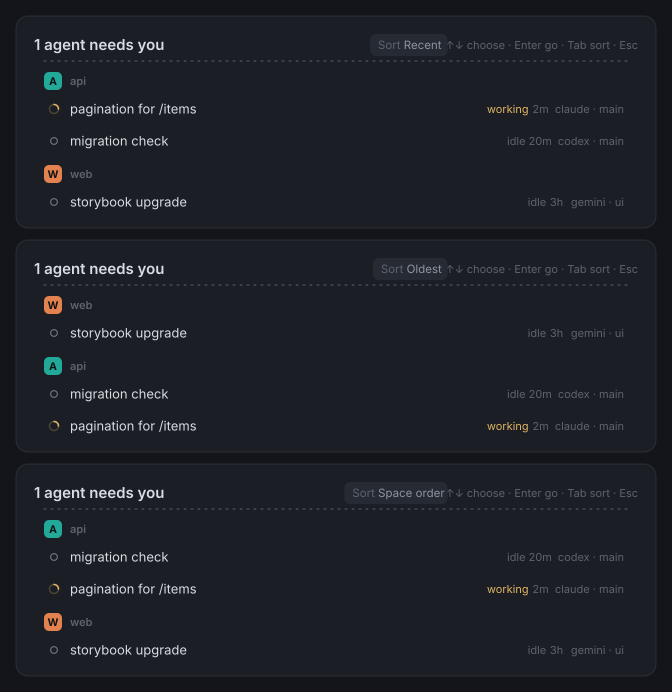
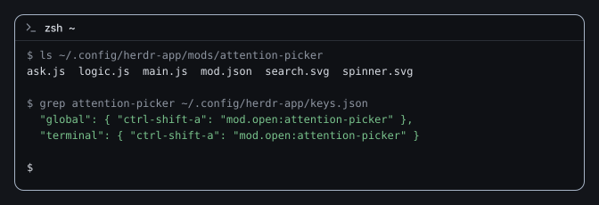

Agents waiting
One dialog that answers "which of my agents needs me?" It lists the agents that are blocked on you, then the ones that have finished, each with what it asked and how long it has waited. Under a rule it lists every other agent, grouped by space.

What you get

Needs you first. Blocked agents, then finished ones, each group in the order Herdr last saw them change. Each row shows the agent's name, its status, how long it has been in that status, its space and tab, and a one-line preview of what it asked.

Everyone else below a rule, grouped by space with the space's color. Agents idle for more than a day fold into an "earlier" line.

Search across name, program, space, tab, title and the status words. Every word you type must match.

Three sorts for the lower list: Recent, Oldest and Space order. Tab cycles them and Herdr remembers your choice.

Standalone. One folder, one key, no other mod needed.


Status
The original mod ran in the author's Herdr on macOS. The changes made since then pass herdr-app check (it renders the mod once) and the unit tests; they have not been watched in a live window yet. Tested on Herdr 0.1.12 only. The list of what nobody has observed, each with a 30-second check, is on Install.
Quick start
- Copy
mods/attention-picker/into your Herdr app home'smods/folder. - Add
"ctrl-shift-a": "mod.open:attention-picker"to theglobalandterminalsections of yourkeys.json. - Press Ctrl+Shift+A. Press it again, or Esc, to close: Esc always works, and the key should (Herdr's
mod.opentoggles).
Details, including how to let a Herdr agent do it for you, are on the Install page.
Read next
- Install
By agent or by hand, requirements, what is not yet verified, uninstall.
- Usage
What it lists, keys, search, sorts, waiting times, previews.
- Configuration
Props, shared keys, rebinding, notes for layout authors.
- How it works
Files, data sources, polling, privacy.
- Troubleshooting
When a key, icon, time or preview is missing.
Privacy in one paragraph
While the dialog is open it reads the screen text of each blocked or finished agent's terminal (the visible screen plus up to 60 lines of history) with Herdr's own hc read, keeps one line per agent in memory, and never stores or sends it. It stores two small things: a map from agent address to the time it was first seen in its current status (with the status group, Herdr's sequence number and the space id), and your sort choice. It uses no network, runs no other program and reads no files. Herdr does not sandbox mods, so this is a promise of this code, checked by a script in the repository, not a limit set by the platform. The full list is on How it works.